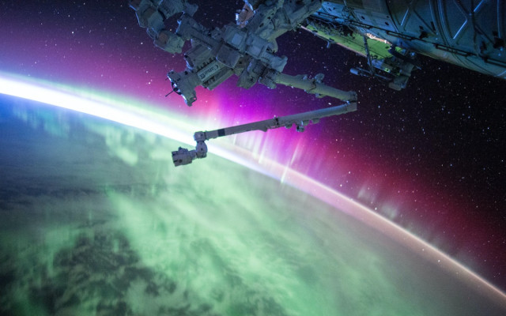
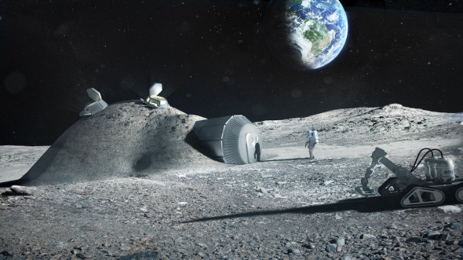
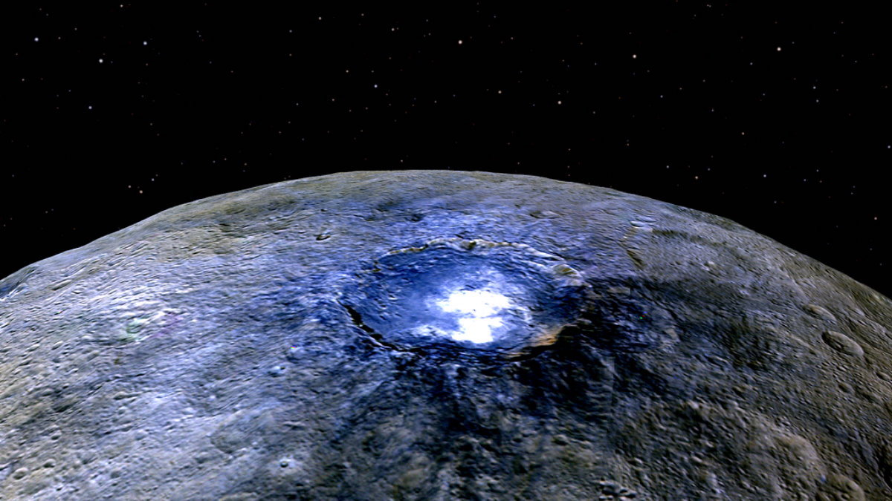
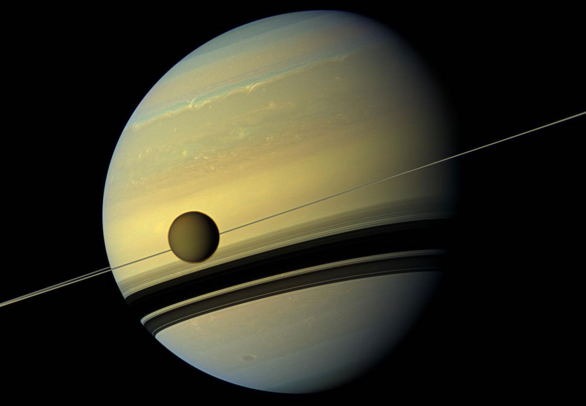

Что, если не Марс: куда можно «переехать» в пределах Солнечной системы
Фото: NASA
Футурологи все чаще говорят о колонизации новых планет. Первым в списке всегда выпадает Марс, а есть ли у человека возможность уехать на другие планеты? Делимся всеми возможными адресами внутри Солнечной системы.
Человек мечтает покорить космос на протяжении многих лет. Некоторые цели давно стали реальностью, а о других можно пока только фантазировать. Среди последних ярко выделяются планы по колонизации других планет. О переезде на Марс говорят многие футурологи, а Илон Маск даже собирается отправить туда первую пилотируемую миссию уже через четыре года. А какие еще точки могут стать доступными для проживания человека?
Возможна ли колонизация Луны?
Луна привлекает многих ученых своей близостью к Земле. Лететь до нее ближе, чем до любого другого космического объекта. Луна кажется настолько привлекательной для переезда, что ученые даже подсчитали примерную стоимость ее колонизации. В теории этот процесс может обойтись в $10 млрд. При этом строительство колонии на земном естественном спутнике стало бы выгодным вложением для дальнейшего покорения космоса. На нем можно построить базу и использовать ее как пересадочный пункт в путешествиях на другие планеты. Поскольку на Луне очень много полезных ископаемых, которые можно использовать в качестве ракетного топлива, она стала бы хорошим местом для заправки космических кораблей.
Среди самых привлекательных мест на Луне выделяют бассейн Южный полюс — Эйткен. Район сильно изрезан кратерами, которые будут защищать астронавтов от сильных ветров. Другое его достоинство — тени. Они помогут избежать сильных перепадов температур. В этой области также находится скопление водяного льда, пригодного для создания газообразного кислорода, питьевой и поливной воды.
Возможная база должна быть изготовлена преимущественно из местных материалов , поскольку перевозка сырья с Земли выйдет в неоправданно крупные суммы. NASA и Европейское космическое агентство (ESA) несколько лет занимаются разработкой возможных решений и уже нашли методы, позволяющие организовать строительство базы исключительно из лунных ресурсов. ESA и архитектурная компания Foster+ с 2013 года работают над проектом Международной лунной деревни и уже представили проект возможного поселения.
Архитектурный проект ESA и Foster+ (Фото: ESA)
База на спутнике Юпитера
Kаллисто, естественный спутник Юпитера, может стать еще одним претендентом на колонизацию. О перспективах его заселения говорят в «Роскосмосе» и «NASA» . Считается, что на нем содержится большое количество подземной воды: по предварительным подсчетам, ее может быть в два раза больше, чем во всех океанах Земли. Помимо практической пользы, вода может стать предметом для исследования: не исключается, что в ней можно найти признаки жизни. Также со спутника было бы удобно совершать миссии на Юпитер, где добывать водород и гелий-3, необходимый для ядерного топлива. База на Каллисто откроет доступ и к полезным ископаемым соседнего естественного спутника — Европы или Юпитера II.
Колонизация Каллисто даст человечеству массу возможностей для добычи ресурсов и проведения исследований, необходимых для понимания устройства Вселенной. Но на пути к этому стоят ряд пока не решенных задач. Так, на спутнике высок уровень радиации и низкая гравитация. Исключение этих проблем упирается в колоссальный бюджет, и будущее миссии зависит от того, сколько на нее готовы потратить. Кроме того, колонизировать Каллисто вероятно начнут не раньше, чем Луну и Марс. Освоение этих космических объектов займет меньше времени и денег. А Каллисто сможет стать логичным следующим шагом.

Спутники Юпитера (Фото: NASA)
Жизнь на облаке Венеры
Bенера кажется еще одной пригодной для жизни планетой. Но перед заселением она нуждается в терраформировании: без изменения климата переехать на Венеру невозможно, так как на ней слишком жарко, сильные ветры, и высокий уровень радиации и давления. Ученые нашли еще один возможный способ колонизации планеты: они предлагают заселить ее атмосферу и устроить воздушный город в облаках. Главное условие — не приземляться на поверхность.
«Атмосфера Венеры похожа на земную, и на высоте 50 км от планеты жить будет достаточно комфортно», — говорит Джеффри Лэндис, ученый из NASA и писатель-фантаст, одним из первых предложивший эту идею.
Поскольку сила гравитации на Венере почти такая же, как на Земле, корабли смогут удержаться в воздухе. А защитить дома от серной кислоты поможет тефлоновая эмаль.

Воздушный дом в облаках Венеры (Фото: medium.
Однако идея ученых сталкивается с несколькими проблемами. В такие дома будет сложно доставлять продовольствие и сырье, необходимые для выживания. Как вариант, астронавты могут отправлять на поверхность роботов и управлять ими с корабля. Венера по строению похожа на Землю, и на ней есть все необходимые для жизни элементы, включая воду. А роботы с дистанционным управлением могли бы как раз заниматься их добычей. И все же говорить о реализации такой идеи пока рано: ученым необходимо досконально изучить планету и отправить туда еще не одну космическую миссию.
Добыча астероидов на Церере
Церера — карликовая планета в главном поясе астероидов между Марсом и Юпитером. Ее диаметр — 950 км и 25% площади занимает водяной лед. Таких запасов воды будет достаточно для успешной колонизации планеты. На Церере в десять раз меньше солнечного света, чем на Земле, но его хватит для создания солнечной энергетики и работы техники от его заряда. Церера — самое крупное космическое тело в своем поясе астероидов. Оно может стать таким же выгодным пересадочным пунктом для путешествий между планетами, как и Луна. Церера также сможет превратиться в базу для добычи астероидов и стать связующим транспортным узлом между Марсом, Луной и Землей.
Колонизация этой небольшой планеты может открыть дорогу к заселению других космических объектов Солнечной системы, например, спутников Юпитера. Еще один вариант — планета может стать неким космическим складом: транспортировать туда ресурсы с Луны или Марса удобнее, чем с Земли на Луну. Также не исключено, что под ее поверхностью может находиться пресноводный океан, который мог бы снабжать соседние планеты. В результате Церера имеет все шансы превратиться в некое подобие промышленного города с заводами по добыче астероидов, полезных ископаемых и воды.
Озеро на Церере (Фото: NASA)
Колония на крупнейшем спутнике Сатурна -
Не действует ширина, т.к. заголовок стал строчным!!!Tитан — единственное космическое тело в пределах Солнечной системы, на котором, как и на Земле, есть жидкость на поверхности, состоящая, правда, не из воды, а из метана и этана. Титан содержит массу полезных ископаемых, аналогичных нефти и природному газу. Их можно использовать для получения энергии, что заменит иссякаемые земные источники. Атмосфере Титана не хватает кислорода, но его можно добывать из водяного льда, который находится под поверхностью спутника. А от холодных температур спасет скафандр.
Гравитация на Титане очень слабая, но некоторые ученые рассматривают это как плюс. Люди смогут летать над поверхностью спутника с прикрученными крыльями, а при их поломке плавно приземляться, ведь их не будет тянуть к земле. Такой вид перемещения может стать полезным в практике и в то же время веселым развлечением.
Титан на фоне Сатурна (Фото: NASA)
Главный недостаток Титана — он находится слишком далеко от Земли. С современными технологиями лететь до него придется около семи лет, что может оказаться не просто долго, но и опасно для здоровья астронавтов. К тому же человечество пока не обладает технологиями, способными оснастить такой долгий полет. Колонизация Титана может начаться после освоения более близких к Земле космических тел и создания более мощных космических кораблей.